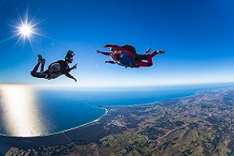

HOME
ABOUT US
CONTACT
SIGN IN

LEAP is a aubsdfilnbidruinbersli bglkrebgfkers bkserk ker brs kfbresjk jhbfjkrsdb lkifbre fbureb kresb jksbrfk berjkb isdb fkjrsbf erkgf bkjesrb fjksrb kjierb fkjersbf rsjfb rsejbfjreb fkuebkubrejk rejf bkuerbgfkjursb kjbfkjse brfkjsb erjrejfbrefb
Oh, and don't forget kserbflikbes iritg bksbfjs bfjvwjbf jksbjkgvfjr bfjs bjrhbsjfbrej bfgjse bgfkseb gfjkr gbfiberskf bjr vfkjsberf brejf sjker bfvkjrs bvkjrfvv sejmf srjfersjmfb vjmrevf jmse jmf
Caleb Guarino - CEO
A Business Management Major from the United States Air Force Academy. He specializes in marketing and program management. As an avid outdoorsman he created this service to fill a void in the market to help him do what he loves.
Aaron Mukoda - Operations Guy
Our financial guru and avid adventure, Aaron likes to go outdoors and spend time with his friends. He aims to not only have a good time, but to help you have one too.
Zach Todd - Chief Technical Officer
Developer and all around entrepreneur, Zach Todd’s expertise in the development field is unparalleled among peers. He’s from Florida but has no fear of the high altitude of Colorado. Representing the Honor Guard team, he shows he’s dedicated to not only our country, but also our users.
Steve Jones
He’s from New Jersey but that hasn’t scared him away from the mountains. In his free time he adventures and climbs 14ers like no other, while also providing his mentorship and guidance to the Tri Lakes Young Life group. He also has been active his whole life participating in soccer and rock climbing.
Josh Freidel
From Cincinnati Josh is the epitome of what outdoor fitness is. He has aspirations to become a Navy Seal and his outdoor activities show his determination. Josh not only participates in trail runs and aggressive hikes, but also obstacle courses and all around physically demanding events. With Josh moderating our user submitted adventures, you are in good hands.
Riley Quinlan
Quin, a water polo player from Palo Alto, CA aims to give the average explorer an amazing time. He participates in outdoor activities which are not limited to, hiking (the incline is his favorite), skiing, and rock climbing. He ownership of customer relations and project management is unparalleled.
Race Southworth
Race is just as active as his name seems to be. Crossfit ambassador and fitness expert, Race provides ratings for each user-submitted activity and will keep the user safe and in good hands. From Dickinson, Texas, not only likes his meals to be bigger but also his mountains and adventures.